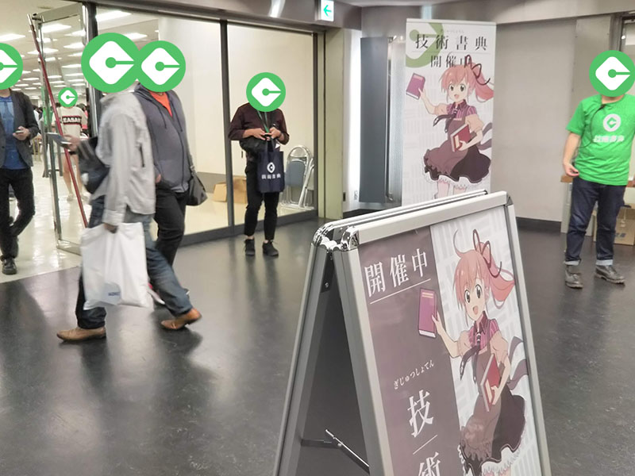
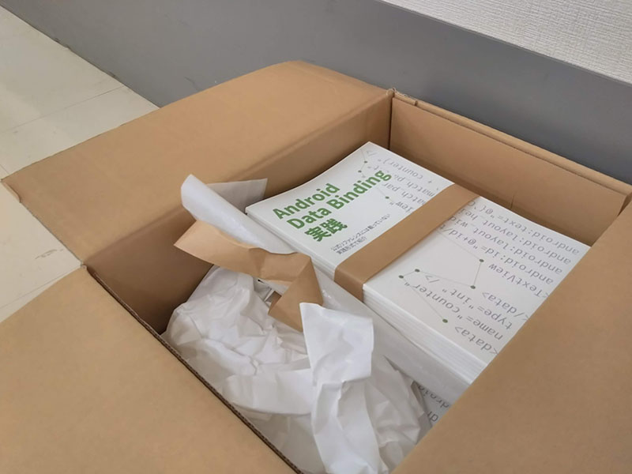
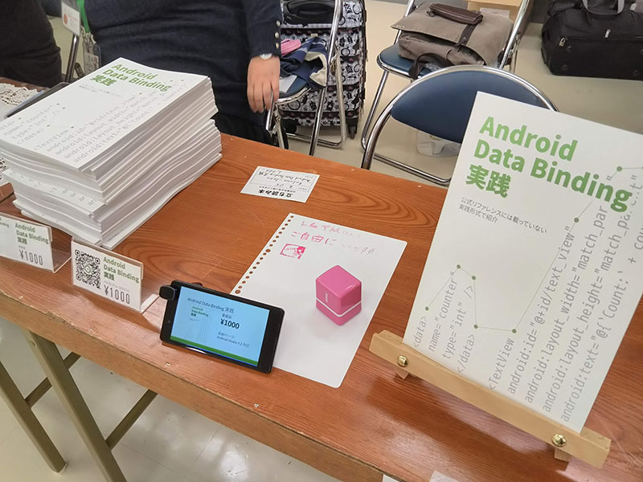
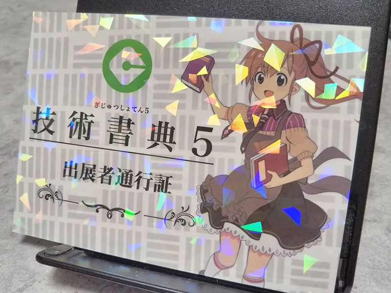

技術書典5でAndroid本を出しました！
2018-10-08 21:13:11 +0900 JST
10月8日に池袋サンシャインシティで行われた技術系の同人誌即売会「技術書典5」にサークルとして参加し、本を出しました！

BOOTHで残りの書籍版とPDF版を販売しています。
技術書典についてはこちらを見てください。
私が今回サークルとして参加するきっかけとなったのが技術書典4に参加したことです。その時はただの1参加者なだけだったのですが、その時の会場の熱気がとてもすごかったことを今でも憶えています。そいて5は自分で本を出してみようと思い今日、サークルとして参加をしたのです。
ここでは参加までの道のりを軽く振り返ってみようと思います。
本ができるまで
参加
まず何も考えずにサークルの参加申し込みをしました。
この時点で書くテーマはなんとなく決めてはいたのですが、どのような本になるかは全然想像もしていませんでした。
めでたくサークル参加が決まってから、本格的に原稿を書き始めました。
下書き
次に行ったのが、見出し(目次)一覧を作成することでした。
これはまずこの本の方向性や、誰に読んでほしいかを決めてから書いたほうが良いと考えたからです。
今回の本では、
- Android開発の中級者以上
- 職場や趣味プログラミングでは本格的なData Bindingを導入していない人
に絞りました。中級者以上なのでAndroid Studioのセットアップや、Kotlinファイル内のimport文は文中で省略しています。
代わりに実戦形式で紹介することで、ただのサンプルではなく実際に自分のコーディングに生かせるような内容にすることを心がけました。
肉付け
原稿のほとんどはMarkdownで書いていました。MarkdownのほうがWordと比べてテキストの扱いが軽く、また意図的に段落を気にせず書くためにあえてテキストエディターで書いていました。
文書校正ツールとしてtextlintを使いました。Visual Studio Codeのプラグインと組み合わせることでリアルタイムにおかしな文章を修正することができました。
仕上げ
文章がほとんど出来上がったと感じたら、PandocでMarkdownからWord形式に変換、そして読みやすいよう段落や修飾を行っていきました。
私はWYSIWYGが好きなのでRE:VIEWではなくWordを使いました。
表紙はAdobe Photoshopで仕上げました。フォトプランというのがあり、これが月額980円でPhotoshopが使えるサブスクリプションがあります。表紙を作るときだけこのプランに入って作成をしました。
最後にPDF形式にまとめて完成です。
印刷
印刷はWebサイトとマニュアルのわかりやすさからねこのしっぽ様にお願いをしました。
ちょうど期間限定のキャンペーンが行われていたためかなり安く印刷することができました。
入稿時、表紙のレイヤーの結合がおかしかったり、iの丸がつぶれてないかを確認していただけたりと非常にサポートも手厚く、おかげで2週間前納品を行うことができました。
DL版
万が一にもないとは思うが、書籍版が全て売り切れてしまった場合に備え、当日からDL版が買えるように手配していました。
DL版はPixivのBOOTHというサービスを利用しました。
前日
Google Keepにチェックリストを作成して、当日忘れないようにしました。
技術書典5、(たぶん)準備完了です！ pic.twitter.com/D4h7u4eT3V
— kuluna@技術書典5 え05 (@kuluna) 2018年10月7日
これ以外にも、
- ハサミ
- 養生テープ
- ペン
- おにぎりと飲み物
- イーゼル
を用意しました。
当日
実は本をすべてイベント会場に届けるようにしてしまったので、完成された本を見るのは当日でした。

手に取ってすぐ、「あぁ、すごい・・・」としばらく感動していました。自分のPDFが本になることは以外と驚きがあるものでした。
さっそく設営をしてみました。

大きなものや動きのあるものがあると興味を引くかなと思い、前日に購入したイーゼルを、正面にはパワーポイントスライドを延々と再生し続けるゴミkatana02を設置しました。
ここからは見えませんが、奥に封筒をぶら下げていて、いただいた1000円札をすぐにしまえるようにしていました。
周りの方はテーブルクロスを引いたり、手書きのネームプレートを掲げたりとどれも独自色が強かったです。
収支
さて気になる収支ですが、
売上
- 書籍70部 × 1000円 = 70,000円
出費
- 印刷代(80部) = 31,200円
- サークル参加費 = 7,000円
合計 38,200円
損益
70,000円 - 38,200円 = 31,800円
大成功だと思います。
欲しいと思った人にはほぼ行き渡り、かつ刷りすぎなく終わってホッとしました。
最後に軽く自分で今回のイベントを箇条書きで振り返ってみました。
やってよかったこと
- 初めからWordではなくMarkdownで構成気にせず書いたので隙間時間に原稿を書くことが出来た
- 正誤表をGitHubで公開
- 当日の昼時に同僚を応援として読んだこと
- もう売れないなと感じたらすぐに委託先に在庫を渡して、自分たちが今度は技術書典を回る側になって楽しんだ
当日に出た問題
- 見本がどれかわからず「見本ください」と聞いてくる人が多かった
- 遠くから見て何の本を売っているのかわからなかった(同僚談)
- ダウンロード版のQRコードを技術書典のかんたん後払いで読み取ろうとする人が多かった
- LGTMはんこ誰も押してくれない
問題に対する解決策
- 見本とでっかくラベルを貼って机からはみ出すぐらいの位置に本を置いて取りやすくした
- B4に表紙を大きく印刷してブースの前に貼った
- 次はDLカード(現金で購入後のプロダクトコードでDLできる)を売るにようにする
- ユーザーははんこを押しにきたのではなく本を買いにきているため押されないのは当然。さっさと引き上げた
次にやりたいこと
- 次の表紙はイラストレーターさんにキラッキラな表紙を描いてもらう
- DL版カードを作る
- 本の特設ページを作る
- もう少し隣のサークルとコミュニケーションをとる
技術書典6が開催されればぜひ、またサークルとして参加してみたいです。
いただいたサークル通行証はどこか目の付きやすい所においておこうかなと思います。
